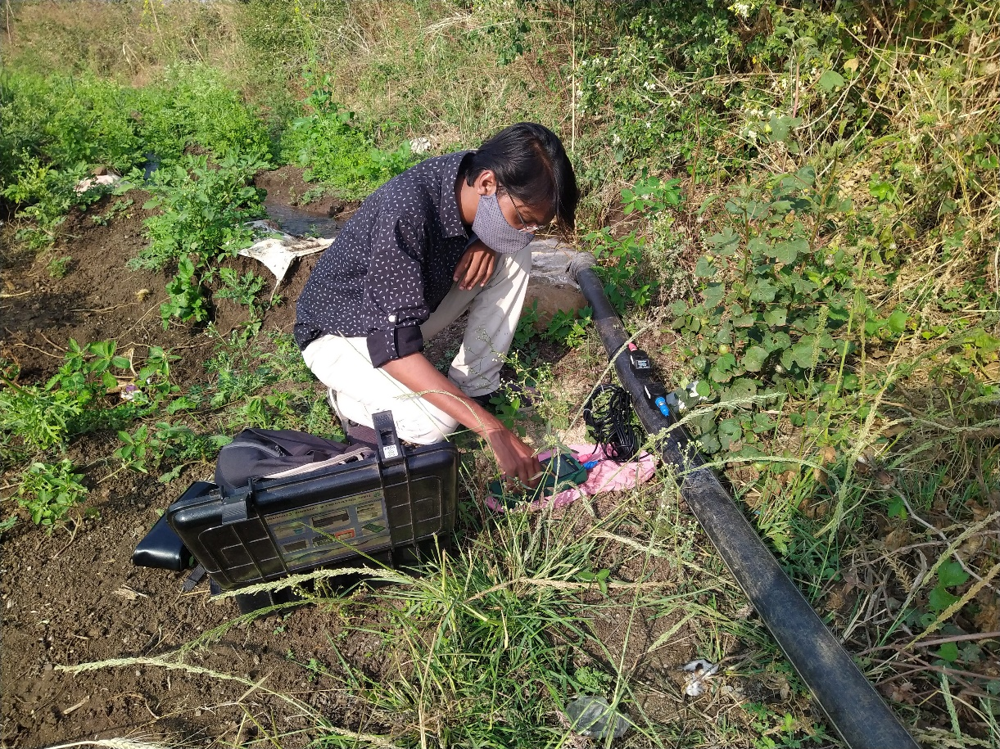
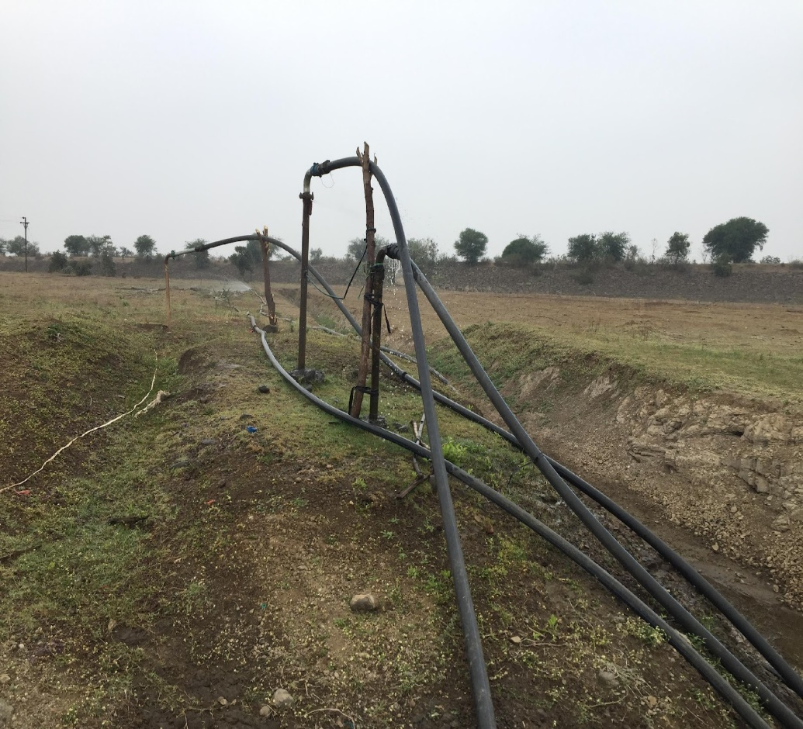
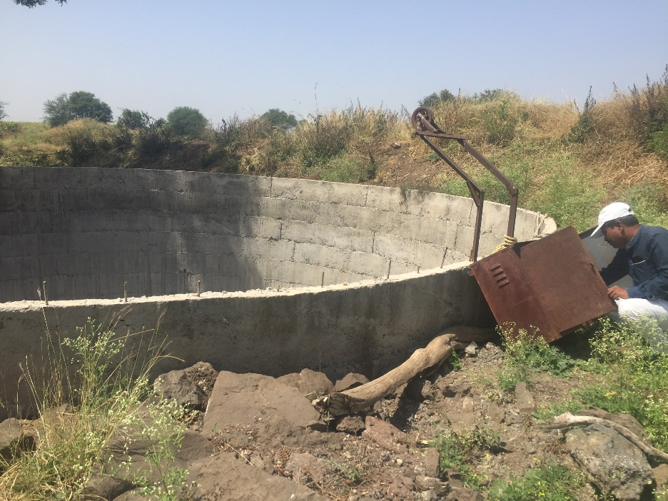

Appropriate pump selection and Efficiency in irrigation pumping
Programs on energy efficiency irrigation pumps have been implemented by governments for several decades up to around 2015. The PoCRA work revealed some interesting new results. With the high penetration of sprinkler usage among farmers in Maharashtra, the selection of a pump can no longer be based on a single duty point. This work addresses this complexity. On the other hand due to various government schemes, many farmers have begun to use star-rated or at least standard pumps.
A set of guidelines for pump selection were developed under PoCRA. A notification for promotion of guidelines was sent through a policy brief to all block level and higher Agricultural officers. The data and result regarding this is included in a publication - Methodology to quantify crop, irrigation water, and energy linkages in small-holder irrigation systems.

Water flow rate measurements

Water being pumped over 1 km from an irrigation tank in Umbarda Bazaar village, Washim

Walgud-Junoni villages group, Osmanabad, Osmanabad